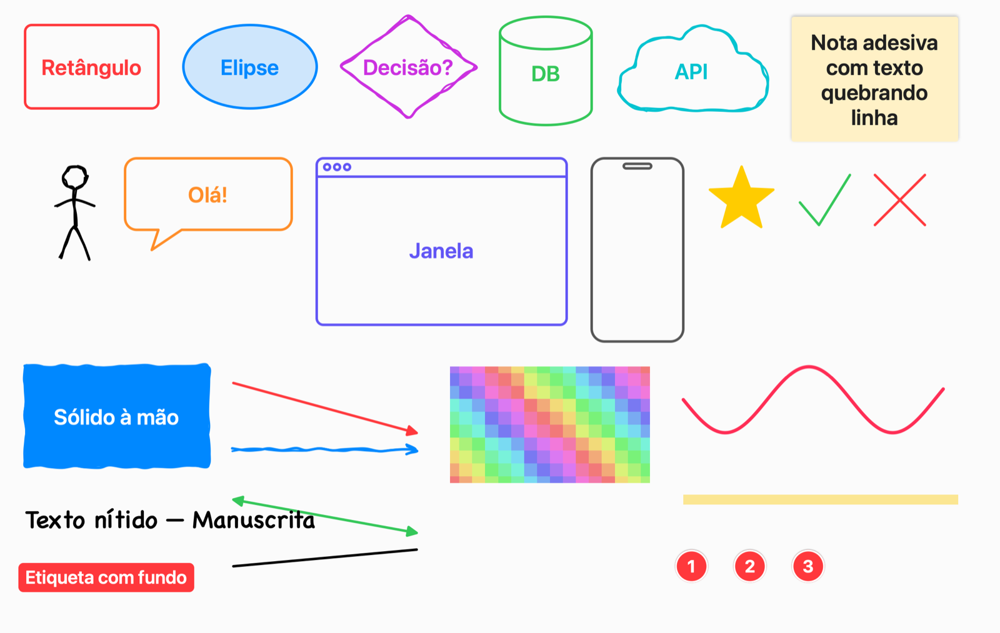

Histórico de cópias
Tudo o que você copia fica guardado: texto, links, código, cores, imagens e arquivos.
- Busca, filtros e fixados
- Cola direto no cursor
- Ignora senhas de gerenciadores
100% GRATUITOsem anúncios · sem cadastro · sem assinatura · código aberto
Desenvolvido por Jonathan Felix · jonathansfp@gmail.com
Histórico de cópias, captura de tela com anotações nítidas, quadro de apresentação, gravação de tela e ditado por voz com a sua IA, num app só. Leve, gratuito e de código aberto.

Gratuito, sem anúncios e de código aberto. Se o CopyPaste te ajuda, apoie o projeto com qualquer valor via Pix.
Como doarCada uma abre na hora e é liberada quando você termina. Nada fica rodando em segundo plano sem motivo.
Tudo o que você copia fica guardado: texto, links, código, cores, imagens e arquivos.
A tela congela no instante do atalho. Clique numa janela ou arraste uma área, anote e copie.
Desenhe por cima de qualquer app numa reunião ou aula, ou num quadro em branco.
Grave uma área ou a tela inteira em MP4, com o microfone e o som do computador.
Segure o atalho, fale e solte. O CopyPaste transcreve e a sua IA limpa o texto: tira os "é", "hã" e "tipo", pontua, monta listas e aplica as suas correções ("às três, não, às quatro" vira "às quatro").
Use a IA local, grátis e offline, ou cole a chave de API de uma destas em Configurações. Sem servidor do CopyPaste e sem mensalidade: com a sua chave, você paga só o uso na sua conta, normalmente centavos por mês.
A voz pode ser transcrita pela IA local em qualquer sistema, pela Apple no Mac, ou pela OpenAI ou pelo Gemini com a sua chave.
Tarefas que pediam três apps, uma assinatura ou muitos cliques viram um atalho.
| Antes | Com o CopyPaste |
|---|---|
| Copiou outra coisa e a anterior sumiu. | O histórico guarda tudo, com busca e colagem no cursor. |
| Print, abrir o editor, anotar, salvar, procurar o arquivo. | Anota sobre a seleção, na hora, e Enter copia. |
| A área de trabalho cheia de "Captura de tela….png". | A captura vai para a área de transferência. Salva só quando você quer. |
| Esconder senhas e dados de clientes exige outro editor. | O desfoque pixeliza a área no próprio arquivo final. |
| Copiar o texto de uma imagem ou de um vídeo. | OCR offline em português: selecione e o texto é copiado. |
| A gravação do sistema não pega o som do computador. | Grava tela, microfone e áudio do sistema juntos. |
As ferramentas de captura mais usadas demoram para abrir e deixam o texto borrado.
| Ferramentas comuns | CopyPaste | |
|---|---|---|
| Abrir a captura | Demora e às vezes trava | A tela congela na hora (~150 ms) |
| Nitidez | Anotações rasterizadas | Vetores na resolução nativa (Retina, 4K) |
| Ferramentas | Caneta, seta, retângulo | + marca-texto, passos, desfoque, componentes, laser |
| Janelas | Seleção manual | Destaca a janela sob o mouse; um clique captura |
| Texto da imagem | — | OCR offline |
| Depois da captura | Copiar ou salvar | + fixar na tela, abrir no quadro, gravar a área |
| Vídeo | — | Com microfone e áudio do sistema |
| Atalhos | Fixos | Configuráveis, com aviso de conflito |
| Preço | Assinatura ou anúncios | Gratuito e de código aberto |
Os padrões abaixo podem ser trocados nas configurações, inclusive por teclas F sozinhas.
copypaste --capture-areaSem custo, sem cadastro e sem versão paga. Baixe só o instalador, sem precisar do código. Os arquivos são gerados pelo GitHub a partir do código aberto. Versões anteriores em Releases.
Na primeira vez: botão direito no app → Abrir → Abrir. A gravação de tela pede macOS 15.
Se aparecer "O Windows protegeu o computador": Mais informações → Executar assim mesmo. Para gravar: winget install Gyan.FFmpeg
AppImage: chmod +x e abrir. Extras: sudo apt install xdotool ffmpeg tesseract-ocr-por
O CopyPaste é gratuito, sem anúncios e de código aberto. Se ele poupa o seu tempo, qualquer valor ajuda a manter o projeto e trazer novidades.
O Mac usa um app nativo em Swift. Windows e Linux compartilham um núcleo em Rust (Tauri 2), com o código de cada sistema na sua pasta.
Swift, AppKit e SwiftUI, ScreenCaptureKit, OCR do Vision.
windows/Colar com SendInput, OCR do Windows, barra fora da gravação.
linux/X11 e Wayland, xdotool e wtype, Tesseract, PipeWire.
core/Núcleo de Windows e Linux: Rust e interface em canvas na GPU.
| Recurso | macOS | Windows | Linux |
|---|---|---|---|
| Histórico com busca e colagem no cursor | ✓ | ✓ | ✓ |
| Captura congelada, lupa e janelas | ✓ | ✓ | ✓ |
| Anotações vetoriais e desfoque | ✓ | ✓ | ✓ |
| Fixar captura na tela | ✓ | ✓ | ✓ |
| OCR (texto da imagem) | Vision | OCR do Windows | Tesseract |
| Quadro com componentes e laser | ✓ | ✓ | ✓ |
| Gravação com microfone e áudio | nativa | ffmpeg | ffmpeg |
| Atalhos globais configuráveis | ✓ | ✓ | ✓ |
Sim. Sem anúncios, sem cadastro e sem limites. O código é aberto sob a licença GPL-3.0. Se quiser apoiar, há a opção de doar via Pix.
Não. O histórico, as capturas e o OCR ficam e rodam só no seu computador, sem internet. O que gerenciadores de senha marcam como confidencial nunca é salvo. A única exceção é o ditado por voz quando você conecta uma IA: aí só o áudio do ditado e o texto vão, direto do seu computador, para o provedor que você escolheu.
Não. A IA local (Gemma 4) é grátis e roda no seu computador, sem internet; basta baixá-la uma vez em Configurações (cerca de 4 GB). Se preferir, use a sua própria chave de API (Claude, ChatGPT, Gemini, DeepSeek ou Grok) e pague só o que usar na conta do provedor, em geral centavos por mês.
Uma vez por semana o CopyPaste confere se há uma versão nova e, se houver, pergunta se você quer atualizar: com um clique em Atualizar agora ele baixa, instala e abre de novo sozinho. Também dá para verificar na hora pelo menu do ícone: Verificar atualizações….
No painel de cada provedor: Claude, OpenAI, Gemini, DeepSeek e Grok. Em Configurações, o link "Obter chave" leva direto à página certa. A chave fica guardada só no seu computador.
O app não é distribuído por uma loja. No Windows, clique em Mais informações → Executar assim mesmo. No Mac, clique com o botão direito no app → Abrir. Isso só acontece na primeira vez.
Pelos botões da barra do quadro: Copiar (cole direto no WhatsApp, Teams, Slack ou e-mail), Salvar na pasta de capturas ou, no Mac, Enviar pelo AirDrop, Mensagens ou Mail.
O ffmpeg, que é gratuito. No Windows: winget install Gyan.FFmpeg. No Linux: sudo apt install ffmpeg. O app avisa se estiver faltando.
O Wayland não deixa apps registrarem atalhos globais. Crie um atalho do sistema que rode copypaste --capture-area (ou --history, --board, --record, --dictate). O app já aberto recebe o comando na hora.
Desligue em Configurações › Acessibilidade › Teclado › "Usar a tecla Print Screen para abrir a captura de tela", ou escolha outro atalho no CopyPaste.